5. Internal Architecture¶
[uml bloc diagram of the architecture] [for each presente all bricks with subsection of which parameters are supported]
BRICKS¶
BRICKS as defined in undulate/bricks.py is an enumeration with common methods to apply on a new brick.
The Enumeration is a 1-to-1 map between the charactere in the wave representation and brick to create.
It also define the following methods
def transform_y(y: float, height: float = 20):
"""
change y coordinate to represente voltage between VSSA and VDDA
if current VSSA <-> ISSA / VDDA <-> IDDA
"""
def from_str(s: str):
"""
from_str return the corresponding enumeration from a char
"""
def ignore_transition(from_symb, to_symb):
"""
define special case when transition are skipped to prevent
glitches by default
"""
undulate.Brick¶
In undulate/generic.py, we define the class from which inherit all other bricks.
A brick is a collection of:
paths
arrows
polygons
splines
texts
within a given box defined by weight and height properties.
Two methods have been define to ensure continuity between symbols:
def get_last_y(self):
"""
get last position to preserve continuity
"""
def alter_end(self, shift: float = 0, next_y: float = -1):
"""
alter the last coordinate to preserve continuity
"""
Then a final method ensure to load the appropriate context to create a brick
def generate_brick(symbol: str, **kwargs) -> dict:
"""
define the mapping between the symbol and the brick
"""
Until now, only three context are existing: Analogue, Digital, and Register.
Analogue Bricks¶
This section present the available bricks inside the analogue context.
List of bricks¶
Symbol |
Class |
Parameters Supported |
Image |
|---|---|---|---|
a |
Analogue |
|
|
c |
Capacitive |
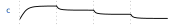 |
|
m |
Metastable |
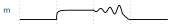 |
|
M |
Metastable |
||
s |
Step |
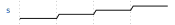 |

Description¶
Analogue signal representations are defined in the `analogue.py`. An analogue signal being able to go through a multitude of “levels” (voltage,current,charges…), basic assumptions have been considered.
All signals are considered to be a voltage with a Maximum excursion in $[V_{SSA}-V_{DDA}]$ range. For the sake of clarity, x-y coordinates are respectively the time and the voltage.
A brick is defined as single expression. To simplify the expression, an analogue context is loaded. This context include the extremum voltage, usual functions, and pi constant.
To be more precise, the context is given below.
CONTEXT = {
"time": [],
"Tmax": 20,
"VSSA": 0,
"VDDA": 1.8,
"atan2": math.atan2,
"pi": math.pi,
"exp": math.exp,
"sin": math.sin,
"cos": math.cos,
"tan": math.tan,
"tanh": math.tanh,
"sqrt": math.sqrt,
"rnd": random.random,
}
This behaviour corresponds to the Analogue brick whose symbol is a.
Other analogue bricks are an Analogue brick with a predefined expression.
Digital Bricks¶
This section present the available bricks inside the digital context.
List of bricks¶
Symbol |
Class |
Parameters Supported |
Image |
|---|---|---|---|
n |
Nclk |
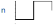 |
|
N |
Nclk |
||
p |
Pclk |
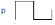 |
|
P |
Pclk |
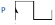 |
|
l |
Low |
||
L |
Low |
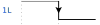 |
|
h |
High |
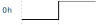 |
|
H |
High |
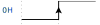 |
|
0 |
Zero |
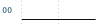 |
|
1 |
One |
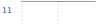 |
|
| |
Gap |
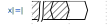 |
|
z |
HighZ |
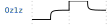 |
|
x |
Data |
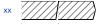 |
|
= |
Data |
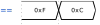 |
|
u |
Up |
||
d |
Down |
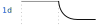 |
|
i |
Impulse |
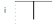 |
|
I |
Impulse |
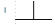 |
Description¶
Register Bricks¶
This section present the available bricks inside the register context.
It is assummed that register description and signals description do not serve the same purpose. Therefore, register description shall not be mixed with signal description.
Dedicated methods are applied to transform a human textual representation of register into a waveform for rendering engines.
List of bricks¶
> For the sake of completeness, the list of bricks are given in this section. However, the end-user do not have to deal with them
Symbol |
Class |
Parameters Supported |
Image |
|---|---|---|---|
[ |
FieldStart |
||
] |
FieldEnd |
||
: |
FieldMid |
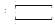 |
|
b |
FieldBit |
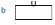 |
Description¶
Style¶
[dev-mode only]
Renderer¶
Renderer is base class from which inherit all rendering engine.
It defines usefull methods
It also define svg_curve_convert(vertices: list) method to the svg path command into derivative rendering engine.